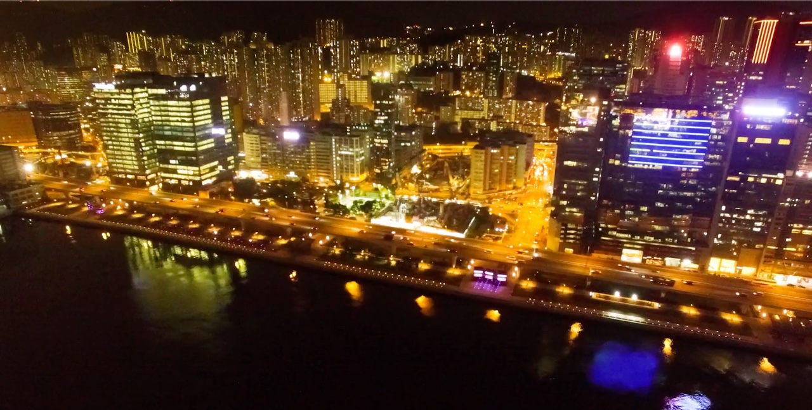

香港特别行政区
山海之间的高密度，效率与自然共存

香港的旅居体验很极端：房租全球最贵之一，但地铁、医疗、郊野公园（占土地四成）都在线，一小时能上山下海。
一句话：收入较高、需要国际连接的人。
港岛（湾仔、中环）：核心区，最贵；
九龙（深水埗、旺角）：烟火气足，性价比相对好；
新界（沙田、将军澳）：房租低三到四成，通勤靠地铁。
【房租参考（月租）】港岛一居约 HKD 15,000–25,000，新界低不少。居住空间普遍很小，"实用面积"比你想的更实用。
【网速】城区 500–1000 Mbps，非常快。
【几月最舒服】10–11 月、2–3 月；夏天炎热潮湿，5–9 月有台风。
【交通】地铁和巴士覆盖极好，机场通全球。
【要注意】房租和生活成本是最硬的门槛，签租约前把所有费用算全（管理费、水电、押金通常是两个月）；居住面积小，长期在家办公会比较压抑。
一、房租和生活成本最高一档。签租约前把所有费用算全：管理费、水电、押金通常是两个月起。
二、居住面积普遍很小，长期在家办公会比较压抑。
三、5–9 月台风季，出行安排留缓冲。
四、夏天湿热、冬天室内偏冷（空调强），穿衣要按室内温度准备。
城区宽带 500–1000 Mbps，非常快；
咖啡馆、共享办公和图书馆网络条件极好，但空间小、翻台快；
国际连接和金融服务无可替代，适合做跨境业务的人；
主要成本是房租，住新界能省不少。
这只是静态版。互动版里能看到香港的实拍短片、按月的气候图，以及住过这里的人写的笔记。
在栖旅里打开香港 →